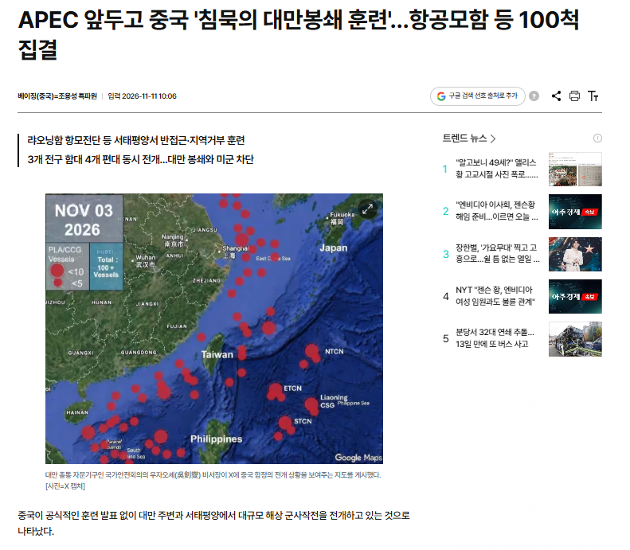
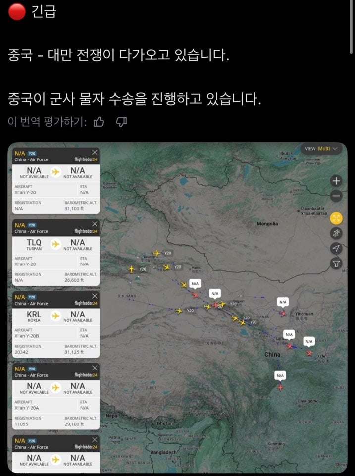

분위기 심상치 않은데
터지면 개붕이들 주식 -99% 찍힐텐데
안울 자신있어?


분위기 심상치 않은데
터지면 개붕이들 주식 -99% 찍힐텐데
안울 자신있어?
나라의 수장들이 죄다 70넘기고 뒤져야 할 새끼들이 얼마 안남은 수명가지고 나라를 움직이려 하는게 맞냐
시발 푸틴도 그렇고 트럼프도 그렇고 죄다 오늘 내일 뒤져도 이상할거 없는 노인네들인데
살만큼 살아서 진짜 세상이 망해도 아쉬울거 없는 새끼들이잖아
대만에서 일하고있는데 나도 야비군 가는건가
금사면되나
진짜 터지면 방산쏘나? 아니면 다 죽고 숏쳐야되나?
양안전쟁 터져서 북한도 움직이면 한미일도 움직이고 그러면 러시아도 움직여야됨
3차대전 시작인데 주식이 문젠가
내 주식은 밥이야!
아는게 없어서 그래
목숨이 문젠데 주식은 아무 것도 아님
북한이랑 우리랑 국방비가 10배 차이다 경제력은 60배 차이고 우리랑 중국이 국방비 10배 차이임 근데 중국은 땅 덩이가 우리에 비해 거의 100배쯤 넓으니깐 면적당으로 따지면 우리가 중국보다 같은 면적에 10배가 몰려 있는거임 우리 ㅈㄴ 쎈 국가임 북한은 핵 있다고? 있으면 뭐 어쩔건데 러시아는 뭐 핵 없어서 안 쏘냐? 핵우산이 작동 할까 말까 하는건 중국이나 러시아 같은 나라가 쐈을때 얘기고 북한이 핵 꺼내는 순간 걍 북한은 지도에서 삭제임
우리도 삭제되겠지...
피해가 얼마든간에 우리가 이기는건 기정사실인데 정은이가 지는게 뻔한 전쟁을 왜 함
역사적으로도 질 게 뻔한 전쟁 벌인 새끼들은 아주 많았다 ㅋㅋㅋㅋㅋㅋ
근데 정은이는 핵이라는 공전절후의 근자감까지 갖고 있음;
그리고 북한과의 충돌 시나리오는 양안전쟁시 후방을 안정시키고 싶은 중국의 대북 압력이 트리거임
전면전까진 아니더라도 한국군과 주한미군의 전력을 북한이 반드시 마킹해줘야함
물론 이 모든건 가능성의 영역이고 역사가 어떻게 흘러갈지는 알 수 없음
개붕쟝 네 말이 틀렸다는게 아니애옹
순진하네ㅋㅋㅋㅋ역사공부 좀 하렴
북한이 핵탄두 60발 보유중이고 북한 그지라 전쟁못한다고 하는데 중국이 물자랑 자원 넣어주면서 푸시하면 어쩔건데
목숨이 중하지 그깟 주식이 중요함?
닉값 해주실래요?
QQQ 사세요 ~
주식이 터지는게 중요하겠냐
주한미군이 동아시아 전진기지로 쓰는건 이미 확정인 상황에서
아뇨아뇨 우린 땅만 빌려줘요, 비군사적 지원만 해요
통할리가 없다고
엔비디아가 무너진 지금이 찬스인가보네. 첩의 10조 물량에 엔비디아 조져도 된다고 각나왔나보네
중국이 대만칠때 북한이도와주면???? 그다음은 솔직히 한국이 타켓 아님???? 북중러 동맹이
양안전쟁나면 구경만하자는 ㅂㅅ들이 천진데 뭔 생각이 있겠음
미국도 구경할껀데 뭐래 ㅋㅋ
이미 울고 있는 사람들 많아
근데 한국전쟁 터지면 주식은 사라지지않고 그대로 남아있음?